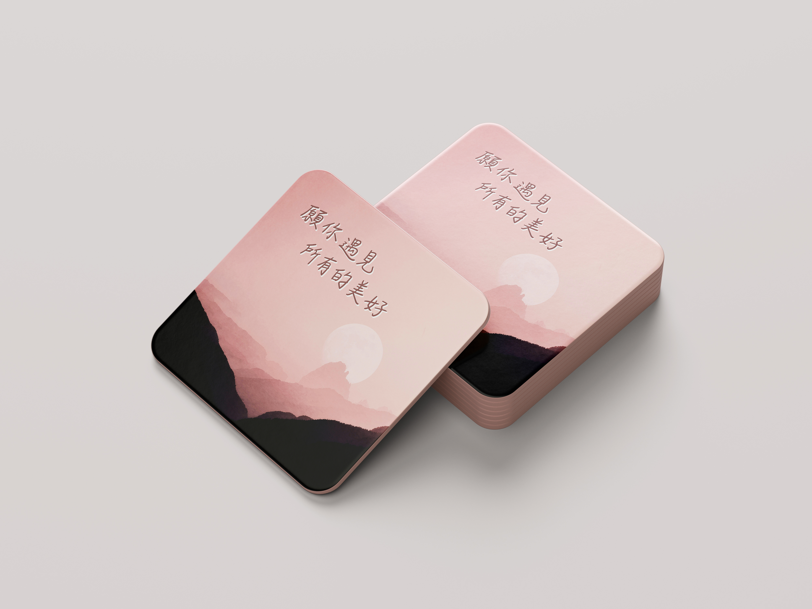

陶瓷杯墊

設計理念
這款杯墊以夕陽與山景作為背景，選用柔和的粉色漸層，營造靜謐的氛圍，搭配一句手寫的祝福文字，希望在使用者短暫歇息、喝杯水或泡杯茶的片刻，也能從畫面與文字中感受到慰藉，並能夠安定心靈。
杯墊選用吸水的陶瓷材質，搭配背面的防滑墊層，提升使用時的穩定性與實用性，不僅適合日常居家、辦公空間使用，也可以客製化文字與背景，無論是作為節日禮物或品牌贈品，都是結合實用性與情感的日常設計小物。
這款杯墊以夕陽與山景作為背景，選用柔和的粉色漸層，營造靜謐的氛圍，搭配一句手寫的祝福文字，希望在使用者短暫歇息、喝杯水或泡杯茶的片刻，也能從畫面與文字中感受到慰藉，並能夠安定心靈。
杯墊選用吸水的陶瓷材質，搭配背面的防滑墊層，提升使用時的穩定性與實用性，不僅適合日常居家、辦公空間使用，也可以客製化文字與背景，無論是作為節日禮物或品牌贈品，都是結合實用性與情感的日常設計小物。